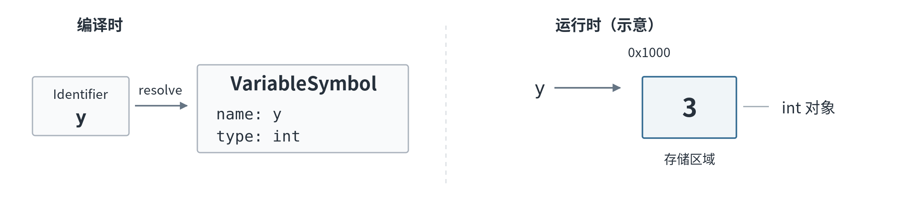
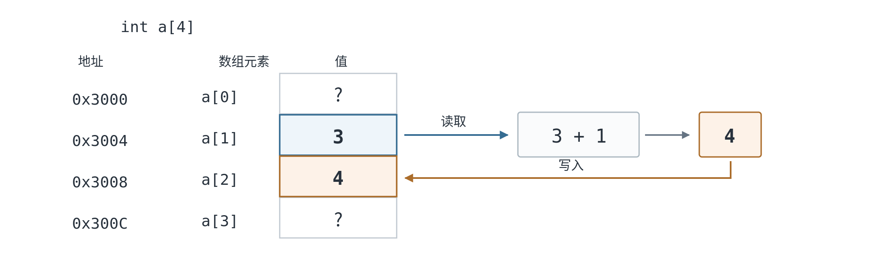

从语义到执行：一个表达式究竟做了什么？¶
在前面的 Lab 中，我们已经学习了符号表、作用域和语义分析。现在，对于下面的程序，编译器能够确定 x 和 y 分别对应哪一个声明，知道它们的类型都是 int，也能够判断加法和赋值在语义上是否合法。
但知道程序合法，还不等于知道它应当怎样执行。 我们先不引入任何新概念，只看 x = y + 1; 最直观的执行过程：
- 取得
y当前保存的值3； - 将
3与常量1相加，得到4； - 将结果
4写入x。
这个过程 读取了 y，但没有读取 x 原来保存的内容 。为什么同样是变量名，有时我们需要它保存的数字，有时却需要找到一个可以写入的位置？
这是本节课要回答的问题，也是我们从语义分析走向代码生成必须补上的一环。前两周回答的是 变量是谁、表达式是什么类型、程序是否合法 ；而接下来要生成代码，编译器还必须弄清楚 程序运行时需要读取什么、计算什么、写入什么 。本节课先把这些行为解释清楚，下一节再学习怎样用 LLVM IR 将它们表示出来。
从名字，到对象，再到值¶
先看 y = 3;。在名称解析（Name Resolution）阶段，源代码中的 y 是一个 Identifier（标识符）。编译器通过符号表找到它对应的声明，并使用 VariableSymbol 等结构记录名称、类型等信息。但 VariableSymbol 是编译器在编译时使用的数据结构，并不是程序运行时保存整数 3 的地方。
为了描述程序的执行，我们还需要 Object（对象） 这个概念。这里的 Object 不是 Java 等面向对象语言中的实例。对于现在讨论的简单变量，可以先把它理解为：程序运行时，一个具有确定身份、类型，并能保存数据的存储单元。例如，int y; 声明了一个 int 类型的变量对象；执行 y = 3;，便使这个对象当前保存的值成为 3。以后再修改 y，变的是它保存的值，而不是我们所指的那个变量对象。
所以，在现阶段，我们完全可以用三个信息来理解一个简单的对象：它是哪一个对象、它是什么类型、它当前保存什么值。在采用内存的实现中，对象还对应一块存储区域，我们可以通过地址定位它。不过，对象本身不等于地址：地址只是帮助我们找到存储区域的位置，而对象是那块区域所承载的运行时实体。

图 1：编译时由标识符找到符号信息；运行时通过存储位置访问 y 对应的 int 对象。图中的地址仅用于示意。
这里的图采用的是便于理解的内存模型，并不是说优化后的每个源语言变量都必须占据一个独立的物理内存单元。我们现在先关心源程序规定了什么行为，再讨论编译器实际采用怎样的表示。
既然对象能够保存数据，那么它所保存的究竟是什么？这就引出了 Value（值） 。例如在 y = 3; 之后，y 对象当前保存的值是 3。但值不一定都要从一个变量对象中读取：在 y + 1 中，1 是直接写在源代码中的 整数常量 ，而加法又会计算出一个新的值 4。
因此，对象是保存值的实体，而值是计算时能够被读取、使用、传递或者产生的数据。这解释了为什么 y 和 3 不是同一回事：y 可以指定一个对象，那个对象的内容可能变化；3 则直接表示一个整数值。
到这里还少一个问题：如果对象里保存的是数据，编译器凭什么知道这些数据代表什么、又能做什么操作？答案是它的 Type（类型） 。
我们在 W6/W7 已经接触过类型检查，现在可以从运行时的角度再看它。例如 int y; 表示 y 是一个整数类型的对象，因此，从它取得的整数值可以与另一个整数值进行 + 运算。相反，下面的 p 是一个结构体对象：
struct Point {
int x;
int y;
};
int main() {
struct Point p;
p.x = 3;
p.y = 4;
int sum = p.x + p.y; // 合法：两个 int 成员相加
// p + 1; // 非法：Point 不是整数，不能直接这样相加
return sum;
}
对于 p，类型 struct Point 告诉编译器：这是一个由两个 int 成员组成的对象。因此，p.x 能指定其中的一个整数成员；p.x + p.y 可以执行整数加法，但不能因为 p 内部有整数，就把整个结构体当成一个整数与 1 相加。
从这两个例子可以看出，Type 决定了我们怎样理解对象中的数据，以及允许对它执行哪些操作；对于数组、结构体这样的复合类型，类型还描述了对象内部由哪些部分构成。我们此前在语义分析中检查加法是否合法，现在也就明白了：检查并非凭空设立的限制，而是为了确保程序运行时执行的是有意义、符合语言定义的操作。
补充：为什么相同的二进制数据可能有不同含义？
计算机最终用由 0 和 1 组成的二进制数据保存信息。假如某个存储单元中的八位数据是 01000001，按照无符号整数的规则解释，它是十进制的 65；如果按照 ASCII 字符编码解释，同样的数据可以表示字符 'A'。
二进制数据没有变，变的是解释它的规则。 这正好说明了为什么仅有一串数据还不够，我们还需要知道应该按照什么类型和表示规则理解它。
这里借用了 C 语言的字符示例；当前 SPL 不包含 char 类型，不要求掌握字符类型的语言规则。
现在，Object、Value 和 Type 就连到了一起：y 指定一个 int 类型的对象；对象当前保存整数值 3；表达式 y + 1 需要取得这个值，再执行整数加法。但回到完整赋值 x = y + 1;，右侧要的是 y 的值，左侧要的却是 x 所在的写入位置。仅仅知道 x 与 y + 1 都具有 int 类型，仍然不能解释这种区别。
表达式何时需要对象，何时需要值？¶
我们平时说“对表达式求值”，容易把它理解成“算出一个数字”。实际上，表达式可以做不止一件事：例如 y + 1 计算出整数值，y 能指定一个变量对象，x = y + 1 还会修改 x 所保存的内容。这也与 C 语言标准对 Expression 的描述一致：表达式可以计算值、指定对象或函数，或者产生副作用。
现在比较 y 与 y + 1。假设 y 的类型是 int，这两个表达式的类型就都是 int，但只有前者能够指定一个确定的对象。也就是说，Type 回答的是“这是什么类型”，却不负责回答“这个表达式指定对象，还是只给出一个计算结果”。为了描述后一种区别，我们还需要 Value Category（值类别）。
在 C 语言中，能够指定某个对象的表达式称为 Lvalue（左值）表达式。这个名称有历史原因：赋值通常需要在等号左边放一个能够接受写入的目标。但这并不是根据表达式 当前写在哪一侧 来分类的。比如 y 在 x = y; 的右侧，依然是左值表达式。a[i] 可以指定数组中的某个元素，p.x 可以指定结构体对象 p 中的成员，它们也是典型的左值表达式。
与之相对，整数常量 3、算术表达式 y + 1 等 提供计算值，而不指定这样的对象 ，通常称为 Rvalue（右值）表达式。两者可以对照理解：
| 表达式 | 值类别 | 原因 |
|---|---|---|
y、(y) |
Lvalue | 指定变量y 对应的对象；括号不改变类别 |
a[i]、p.x |
Lvalue | 指定数组元素或结构体成员对象 |
3 |
Rvalue | 直接提供整数值 |
y + 1、y < 10 |
Rvalue | 产生计算结果，而不指定可写入对象 |
在我们现在使用的简单内存模型中，计算一个左值所指定的对象 ，常常可以直观地理解为“找到它的存储位置”。不过左值是一种 表达式的语义类别 ，不是某个具体的内存地址数值。
从对象取得值：Lvalue Conversion¶
这时自然会遇到一个新问题：y 虽然能够指定对象，但 y + 1 中的加法需要的是整数值，怎么办？我们已经知道答案：取得 y 对象当前保存的值。
在 C 语言中，对于通常的非数组左值，这个从对象取得值的过程叫作 Lvalue Conversion（左值转换）。顾名思义，表达式原本具有左值语义；当它出现在需要值的上下文中时，我们取得它所指定对象的值，转换后的结果不再是左值，而是用于后续计算的值（可以直观地理解为右值）。例如 y = 3; 之后计算 y + 1，先取得 y 中的 3，再与常量 1 相加。
这里最容易误解的一点是：y 这个表达式本身仍然属于 Lvalue。它不是因为出现在赋值号右侧就被重新分类；发生左值转换，是因为当前的加法运算需要它所保存的值。反过来，赋值号左侧的 x 要提供的是写入目标，所以不必先取得 x 原来的值。
我们可以通过两个紧挨着的例子理解这种区别：
例 1：x = x + 1
最后一行中，同一个变量 x 出现了两次，而且这两个 x 都是 Lvalue Expression ，都能够指定同一个变量对象。
但是，它们所处的上下文不同，因此使用方式也不同。
右侧的 x 出现在加法表达式 x + 1 中。加法需要的是一个整数 值 ，因此需要从 x 所指定的对象中读取当前保存的值 3：
左侧的 x 则是赋值的目标。这里需要保留 x “指定对象”的含义，从而将右侧计算出的 4 写入这个对象，因此 不需要先读取 x 原来保存的值 。
所以：
这里读取和修改的是同一个对象，并不是两个不同的 x 对象。
例 2：return x
return 语句需要的是一个要返回给调用者的 整数值 。因此，虽然这里完全没有赋值运算符，表达式 x 仍然需要从它所指定的对象中取得当前保存的值 3。
也就是说，这里同样会发生 Lvalue Conversion ：
这说明一个非常重要的事实：
是否发生 Lvalue Conversion，并不是由表达式位于赋值号左边还是右边决定的，而是取决于当前上下文需要“对象”还是“值”。
Lvalue Conversion 这个名字也可以这样理解：一个 Lvalue Expression 原本能够 指定一个对象 ；当当前上下文需要的是该对象中保存的值时，就从这个左值所指定的对象中 取得值 。转换以后，我们关注的已经不再是 哪个对象 ，而是 这个对象当前保存的值 。
因此，可以直观地把它理解为：
传统上也常把这个过程理解为从“左值语义”转向“右值语义”。不过更准确地说，关键不是简单地把一个表达式重新贴上 Rvalue 标签，而是：原本指定对象的左值被转换为该对象所保存的值，转换结果不再具有原来的左值属性。
有了这个区别，我们也能够解释为什么下面的赋值不合法：
x + 1 可以计算出一个整数值，但是这个计算结果并没有指定一个可以接收写入的对象。因此，它不能作为赋值操作的左侧。
不过，到这里还需要再区分一个概念：能够指定对象，并不意味着这个对象一定允许被修改。
因此，C 语言进一步定义了 Modifiable Lvalue（可修改左值） 。
例如：
这里的 x 是 Lvalue，同时也是 Modifiable Lvalue，因此可以作为赋值目标。
但如果一个变量被 const 修饰：
x 仍然能够指定一个确定的对象，所以它仍然是 Lvalue；但是这个对象不允许通过该表达式修改，因此它 不是 Modifiable Lvalue 。
数组也是另一个典型例子：
数组表达式 a 能够指定数组对象，因此它具有左值属性；但是在 C 中，数组不是 Modifiable Lvalue，不能通过普通赋值运算符整体赋值。
所以可以把这几个概念区分为：
| 表达式 | 是否为 Lvalue | 是否为 Modifiable Lvalue | 能否作为普通赋值目标 |
|---|---|---|---|
普通变量 x |
✓ | ✓ | ✓ |
const int x 中的 x |
✓ | ✗ | ✗ |
数组 a |
✓ | ✗ | ✗ |
x + 1 |
✗ | ✗ | ✗ |
SPL 中的情况
当前 SPL 没有 const 限定符，因此不会出现 const int x 这种“由于 const 而成为不可修改左值”的情况。
不过，区分 Lvalue 和 Modifiable Lvalue 仍然是有意义的：是否能够作为赋值目标，最终取决于语言本身对相应表达式和类型所规定的赋值规则。
从简单变量到数组和结构体¶
对于简单变量 x，定位对象容易想象。但在 a[i] 或 p.x 中，我们还需要先弄清楚：所要访问的究竟是整个对象中的哪一个部分？
a[1] 先指定数组中的第 1 号元素，再取得该元素当前的值 3，计算得到 4；左侧的 a[2] 则指定第 2 号元素，然后把 4 写进去。两边都要确定元素的位置，但只有右侧还要读取元素原来保存的值。

图 2：a[1] 的值参与计算，结果写入 a[2]。图中地址是示意值，展示的是赋值完成后的状态。
类似地，p.x 需要先确定结构体对象 p，再确定其中的成员 x。对于 p.x = 3;，找到成员后写入即可；对于 return p.x;，找到成员后还要取得它所保存的值。
至此，我们已经把赋值表达式拆解成了几种不同的行为：定位对象、取得值、执行计算、写入结果。但还有一个问题：一次表达式计算是否只会得到一个结果，还是也可能改变程序原有的状态？
计算结果之外：副作用与求值顺序¶
比较 x + 1; 和 x = x + 1;。两者都能执行整数加法，但后一种还会把新值写回 x，使对象的内容改变。这种表达式求值过程中对程序状态产生的影响称为 Side Effect（副作用）。在真实程序中，副作用除了普通变量的写入，也可能包含 I/O 等对外部环境产生的效果。
为什么编译器要关心它？考虑两个表达式语句：
第一行的计算结果未被使用，也没有其他效果，编译器通常可以省去它。第二行即使忽略返回值，也不能因此直接删掉调用，因为foo() 可能修改数据或进行 I/O。编译器不仅要知道一个表达式算出了什么，还必须知道执行它会不会改变程序状态。
由此又出现了一个问题：如果一个表达式包含多个子表达式，它们的执行顺序由什么决定？
我们以前讨论过运算符优先级。比如 a + b * c 按 a + (b * c) 组合，这说明乘法的结果是加法的一个操作数。但它只决定表达式的 Grouping（组合方式），并没有仅凭语法树就规定必须先读取 a，还是先取得 b 和 c 的值。Grouping 不等于 Evaluation Order（求值顺序）：前者决定运算结构，后者决定相关计算及副作用在运行时如何先后发生。
为了体会顺序为什么重要，我们借用一个 C 语言例子（不是 SPL 代码）：
x++ 会产生修改前的值，同时产生使 x 加一的副作用。那么第二个参数 x 读取到的到底是哪一个值？这不是“参数写在左边还是右边”就能回答的问题。按照 C 的求值顺序规则，这两个参数的相关求值之间不存在先后保证；对同一个 x 的修改与读值计算是 Unsequenced（未排序的），因此这个调用在 C 中会触发 Undefined Behavior（未定义行为），而不是简单地在两个正常结果中任选一个。
C 使用 Sequenced Before 描述求值之间的先后约束：如果 A is sequenced before B，A 的相关求值就必须先于 B 发生。语言规范只有明确了哪些行为必须先后发生，编译器才能判断哪些求值可以交换顺序、哪些不能。
扩展：Sequenced Before、UB 与编译器优化
Sequenced-before 在 C 标准中是一种形成 偏序（Partial Order） 的关系，而不是要求所有子表达式从左到右执行。当一个标量对象上的修改与另一次对该对象的修改或读值计算之间是 unsequenced 时，会导致 C 的未定义行为。
另一个典型例子是 C 中的 Signed Integer Overflow（有符号整数溢出）。所谓 UB，并不是规定程序“必然崩溃”，而是语言标准不要求它在这种情况下表现为某个特定结果。编译器优化需要维护语言所保证的行为，因此可以利用规范对有定义程序建立的前提。可在 Compiler Explorer 中尝试不同优化级别。
另一种情况是语言直接规定某个表达式是否会执行。例如 C 的 Short-circuit Evaluation（短路求值）：在 A && B 中，先对 A 求值；若它为假，就不再计算 B。
x != 0 为假，右侧的 10 / x 不会被执行，因此这里不会发生除以零。可见有些表达式不仅需要计算值，还需要决定下一部分代码是否执行。这会在后面的控制流翻译中再次出现。
C 与 SPL 的边界
这里的 x++、C 函数参数求值顺序、C 的 UB 以及短路规则，都用于展示 语言语义为什么会约束编译器的代码生成与优化 。当前 SPL 不支持 ++；SPL 是否对求值顺序、短路执行作出同样保证，仍须以 SPL 自己的语言规范为准。
接下来，怎么把这些行为表示出来？¶
现在回到最初的 x = y + 1;。我们已经能准确描述：右侧 y 指定一个对象，当前上下文需要读取它的整数值；加法产生新的值；左侧 x 指定写入目标，赋值使这个对象保存的内容发生变化。一个简单的源语言表达式，其实隐含了 对象定位、读取、计算、写入 等不同的行为。
但编译器不能停留在这一段文字说明上。为了继续完成代码生成，它需要一种可以把这些行为明确表示出来的 Intermediate Representation（中间表示，IR）。下一节我们将正式学习 LLVM IR，认识一种简单实现如何通过 load 表示读取、通过 add 表示加法、通过 store 表示写入；之后还会讨论数组与结构体的地址计算，以及条件分支和循环的控制流表示。
因此，这一节课并不是额外增加一套术语，而是在解决从“程序合法”到“程序怎样被翻译”的中间问题：表达式执行时究竟需要做什么？ 只有弄清楚这些语义，后面的 IR 指令才有明确的来源。
课堂练习¶
练习 1：同一个变量名，为什么要使用两次？
已知：
请解释最后一行中左右两个 x 与 y 分别需要提供对象还是值；哪些对象需要被读取，最终又向哪个对象写入？